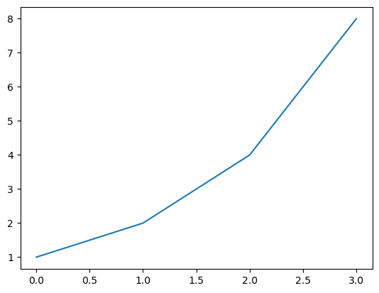

1+23# Jupyter Notebook使用方法
Jupyter Notebook是一个开源的Web应用程序，既提供了交互式的编程环境，又是可以作为记录相关信息的笔记本，这样的属性使它非常适合Python新手学习和编程。
我们看一下下面这个例子，可以通过Python运行得到计算结果：
1+23通过代码，文字结合的形式，并通过实时反馈运行结果，Jupyter Notebook成为实验性编程的完美环境。
现在你可以自己尝试一下. 点击右上角的”Copy & Edit”可以得到你自己的可编辑版本, 选择当前单元并且输入 Shift-Enter.
很多机构都在使用Jupyter Notebook, 包括Google, Microsoft, IBM, Bloomberg, Berkeley and NASA 等等. 甚至诺贝尔经济学得主 都在使用Jupyter Notebooks 并且有报道认为Jupyter Notebooks将作为新形式的研究论文.
一种输入文字的单元叫做 Markdown cell. Markdown 是一种流行的标记语言。要指定一个单元为Markdown，你需要单击工具栏中的下拉菜单并选择Markdown。
请点击下方的“+ Markdown”按钮。现在你可以输入你的第一个Markdown单元。写下“我的第一个markdown单元”并点击运行。
你应该会看到类似以下内容：
我的第一个markdown单元
现在尝试创建你的第一个 代码 单元：按照之前的步骤，但点击 + Code。输入类似 3/2 的内容。你应该看到输出为 ‘1.5’
3/320.09375如果你在 Markdown 单元格中犯了一个错误并且你已经运行了它，你会注意到你无法仅通过单击它来编辑它。这是因为你处于命令模式。 Jupyter Notebooks 有两种不同的模式： - 编辑模式：：允许你编辑单元格的内容。 - 命令模式：：允许你将笔记本作为一个整体进行编辑并使用键盘快捷键，但不能编辑单元格的内容。 你可以通过按 ESC 和 Enter 或单击单元格外部或内部（如果是 Markdown 单元格，则需要双击）来在这两者之间切换。你始终可以知道自己处于哪种模式：当前单元格在编辑模式中将具有绿色边框，在命令模式中将具有蓝色边框。试试吧！
你的笔记本每 120 秒自动保存一次。如果你想手动保存，只需按右上角的“保存版本”按钮即可。 要了解你的内核（在幕后执行指令的 Python 引擎）是否正在计算，您可以检查单元格左侧的图标。如果圆点旋转，则表示内核正在工作。如果没有，则处于闲置状态。 你必须了解我们所有使用的几个快捷方式（始终处于命令模式）。这些都是： - Shift+Enter：在单元格上运行代码或 Markdown - 向上箭头 / 向下箭头：在单元格之间切换 - b：在该单元格下创建新单元格 - 0+0：重置内核 你可以通过键入 h （寻求帮助）来找到更多快捷方式。 你可能需要使用 shell 命令，例如 Jupyter Notebook 环境中的“ls”或“cat”。这很容易做到：只需在 shell 命令之前输入 !，如下所示：
!pwd/Users/hacker/Code/Github/python101/nbs
你知道Jupyter Notebook团队获得了软件系统的最高荣誉——ACM软件系统奖吗？
你知道吗，你可以像我在上面的单元格中那样向你的笔记本添加图片吗？要做到这一点，只需将你的图片复制到计算机上，然后粘贴到一个 markdown 单元格中。你会看到像这样的内容：

当你执行该单元格时，你会看到图片出现
使用Markdown时格式化代码的五个最重要概念是：
引用:: 用`包围你的文本。注意，在 markdown 单元格中在文本前添加一个井号会使文本成为标题。包含的井号数量将决定标题的优先级（# 是一级，## 是二级，### 是三级，#### 是四级）。我们将通过左侧的 + 按钮添加三个新单元格，以查看每个级别的标题效果。 在笔记本中，双击一些标题，找出它们是什么级别！
在markdown中有三种类型的列表。 有序列表： 1. 步骤1 2. 步骤1B 3. 步骤3 无序列表 * 学习率 * 周期长度 * 权重衰减 任务列表 - [x] 学习Jupyter笔记本 - [x] 写作 - [x] 模式 - [x] 其他考虑 - [ ] 改变世界 在笔记本中，双击它们以查看它们是如何构建的！
代码单元与Markdown单元不同，因为它们有一个输出单元。这意味着我们可以在笔记本中_保留_代码的结果并分享它们。假设我们想展示一个解释实验结果的图表。我们只需运行必要的单元并保存笔记本。再次打开时，输出将会在那里！通过运行接下来的两个单元试试看吧。
a = 1
b = a + 1
c = b + a + 1
d = c + b + a + 1
a, b, c ,d(1, 2, 4, 8)import matplotlib.pyplot as plt
plt.plot([a,b,c,d])
plt.show()
这个笔记本正在Kaggle中运行。您还可以在其他云环境中运行笔记本，例如Colab、Sagemaker Studio Lab和Paperspace Gradient。或者您可以从本地计算机运行Jupyter Notebook服务器。更重要的是，如果您已安装Anaconda，您甚至不需要安装Jupyter（如果没有，只需pip install jupyter）。 您只需在终端中运行jupyter notebook。请记住从包含您想要访问的所有文件夹/文件的文件夹中运行它。您将能够打开、查看和编辑您运行此命令的目录中的文件，但无法访问父目录中的文件。 如果在您运行命令后浏览器标签页没有自动打开，您应该CTRL+CLICK以’http://localhost:’ 开头的链接，这将会在您的默认浏览器中打开一个新标签页。
这里有一些在 Jupyter Notebook 中有用的技巧列表。确保你尽早学习它们，并尽可能多地使用它们！
在命令模式中有几个有用的键盘快捷键，可以帮助你更快地使用Jupyter Notebook。记住，你可以通过Esc和Enter在命令模式和编辑模式之间来回切换。 - m:: 将单元格转换为Markdown - y:: 将单元格转换为代码 - d+d:: 删除单元格 - o:: 切换隐藏或显示输出 - Shift+向上箭头/向下箭头:: 选择多个单元格。一旦选择了它们，你可以像批处理一样对它们进行操作（运行、复制、粘贴等）。 - Shift+M:: 合并选定的单元格
?function-name:: 显示该函数的定义和文档字符串??function-name:: 显示该函数的源代码doc(function-name):: 显示该函数的定义、文档字符串和文档链接 （仅在导入fastai库时有效）?了解Python的print()函数的示例：?print??print行魔法是可以在单元格上运行的函数。它们应该位于行的开头，并将调用它们的行的其余部分作为参数。通过在命令前放置 ‘%’ 符号来调用它们。最有用的包括： - %matplotlib inline:: 确保所有 matplotlib 图将在笔记本的输出单元格中绘制，并在保存时保留在笔记本中。
%matplotlib inline%timeit:: 运行一行一万次，并显示运行所需的平均时间。17 µs ± 97 ns per loop (mean ± std. dev. of 7 runs, 100,000 loops each)%debug: 使用Python调试器检查显示错误的函数。如果您在错误后立即在单元格中输入此内容，您将被引导到一个控制台，在那里您可以检查所有变量的值。